- 00 学习指南 如何学习这门编译原理实战课？.md.html
- 00 开篇词 在真实世界的编译器中游历.md.html
- 01 编译的全过程都悄悄做了哪些事情？.md.html
- 02 词法分析：用两种方式构造有限自动机.md.html
- 03 语法分析：两个基本功和两种算法思路.md.html
- 04 语义分析：让程序符合语义规则.md.html
- 05 运行时机制：程序如何运行，你有发言权.md.html
- 06 中间代码：不是只有一副面孔.md.html
- 07 代码优化：跟编译器做朋友，让你的代码飞起来.md.html
- 08 代码生成：如何实现机器相关的优化？.md.html
- 09 Java编译器（一）：手写的编译器有什么优势？.md.html
- 10 Java编译器（二）：语法分析之后，还要做些什么？.md.html
- 11 Java编译器（三）：属性分析和数据流分析.md.html
- 12 Java编译器（四）：去除语法糖和生成字节码.md.html
- 13 Java JIT编译器（一）：动手修改Graal编译器.md.html
- 14 Java JIT编译器（二）：Sea of Nodes为何如此强大？.md.html
- 15 Java JIT编译器（三）：探究内联和逃逸分析的算法原理.md.html
- 16 Java JIT编译器（四）：Graal的后端是如何工作的？.md.html
- 17 Python编译器（一）：如何用工具生成编译器？.md.html
- 18 Python编译器（二）：从AST到字节码.md.html
- 19 Python编译器（三）：运行时机制.md.html
- 20 JavaScript编译器（一）：V8的解析和编译过程.md.html
- 21 JavaScript编译器（二）：V8的解释器和优化编译器.md.html
- 22 Julia编译器（一）：如何让动态语言性能很高？.md.html
- 23 Julia编译器（二）：如何利用LLVM的优化和后端功能？.md.html
- 24 Go语言编译器：把它当作教科书吧.md.html
- 25 MySQL编译器（一）：解析一条SQL语句的执行过程.md.html
- 26 MySQL编译器（二）：编译技术如何帮你提升数据库性能？.md.html
- 27 课前导读：学习现代语言设计的正确姿势.md.html
- 28 前端总结：语言设计也有人机工程学.md.html
- 29 中端总结：不遗余力地进行代码优化.md.html
- 30 后端总结：充分发挥硬件的能力.md.html
- 31 运行时（一）：从0到语言级的虚拟化.md.html
- 32 运行时（二）：垃圾收集与语言的特性有关吗？.md.html
- 33 并发中的编译技术（一）：如何从语言层面支持线程？.md.html
- 34 并发中的编译技术（二）：如何从语言层面支持协程？.md.html
- 35 并发中的编译技术（三）：Erlang语言厉害在哪里？.md.html
- 36 高级特性（一）：揭秘元编程的实现机制.md.html
- 37 高级特性（二）：揭秘泛型编程的实现机制.md.html
- 38 综合实现（一）：如何实现面向对象编程？.md.html
- 39 综合实现（二）：如何实现函数式编程？.md.html
- 40 成果检验：方舟编译器的优势在哪里？.md.html
- 不定期加餐1 远程办公，需要你我具备什么样的素质？.md.html
- 不定期加餐2 学习技术的过程，其实是训练心理素质的过程.md.html
- 不定期加餐3 这几年，打动我的两本好书.md.html
- 不定期加餐4 从身边的牛人身上，我学到的一些优秀品质.md.html
- 不定期加餐5 借助实例，探究C++编译器的内部机制.md.html
- 划重点 7种编译器的核心概念与算法.md.html
- 期末答疑与总结 再次审视学习编译原理的作用.md.html
- 热点问题答疑 如何吃透7种真实的编译器？.md.html
- 用户故事 易昊：程序员不止有Bug和加班，还有诗和远方.md.html
- 知识地图 一起来复习编译技术核心概念与算法.md.html
- 结束语 实战是唯一标准！.md.html
- 捐赠
30 后端总结：充分发挥硬件的能力
你好，我是宫文学。
后端的工作，主要是针对各种不同架构的CPU来生成机器码。在第8讲，我已经对编译器在生成代码的过程中，所做的主要工作进行了简单的概述，你现在应该对编译器的后端工作有了一个大致的了解，也知道了后端工作中的关键算法包括指令选择、寄存器分配和指令排序（又叫做指令调度）。
那么今天这一讲，我们就借助在第二个模块中解析过的真实编译器，来总结、梳理一下各种编译器的后端技术，再来迭代提升一下原有的认知，并加深对以下这些问题的理解：
- 首先，在第8讲中，我只讲了指令选择的必要性，但对于如何实现指令选择等步骤，我并没有展开介绍。今天这一讲，我就会带你探索一下指令选择的相关算法。
- 其次，关于寄存器分配算法，我们探索过的好几个编译器，比如Graal、gc编译器等，采用的都是线性扫描算法，那么这个算法的原理是什么呢？我们一起来探究一下。
- 最后，我们再回到计算机语言设计的主线上来，一起分析一下不同编译器的后端设计，是如何跟该语言的设计目标相匹配的。
OK，我们先来了解一下指令选择的算法。
指令选择算法
回顾一下，我们主要是在Graal和Go语言的编译器中，分析了与指令选择有关的算法。它们都采用了一种模式匹配的DSL，只要找到了符合模式的指令组合，编译器就生成一条低端的、对应于机器码的指令。
那为什么这种算法是有效的呢？这种算法的原理是什么呢？都有哪些不同的算法实现？接下来，我就给你揭晓一下答案。
我先给你举个例子。针对表达式“a[i]=b”，它是对数组a的第i个元素赋值。假设a是一个整数数组，那么地址的偏移量就是a+4*i，所以，这个赋值表达式用C语言可以写成“*(a+4*i)=b”，把它表达成AST的话，就是下图所示的样子。其中，赋值表达式的左子树的计算结果，是一个内存地址。
图1：a[i]=b的AST
那么，我们要如何给这个表达式生成指令呢？
如果你熟悉x86汇编，你就会知道，上述语句可以非常简单地表达出来，因为x86的指令对数组寻址做了优化（参见第8讲的内容）。
不过，这里为了让你更容易理解算法的原理，我设计了一个新的指令集。这个指令集中的每条指令，都对应了一棵AST的子树，我们把它叫做模式树（Pattern Tree）。在有的算法里，它们也被叫做瓦片（Tiling）。对一个AST生成指令，就是用这样的模式树或瓦片来覆盖整个AST的过程。所以，这样的算法也叫做基于模式匹配的指令生成算法。
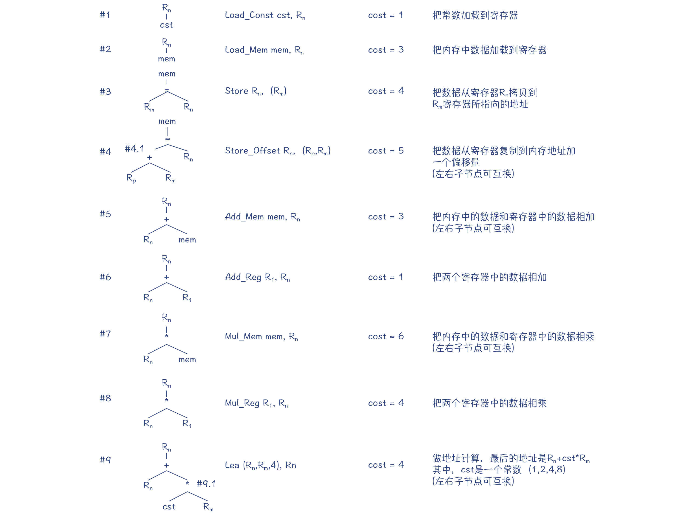
图2：指令集中的指令和对应的模式树
你可以看到，在图2中，对于每棵模式树，它的根节点是这个指令产生的结果的存放位置。比如，Load_Const指令执行完毕以后，常数会被保存到一个寄存器里。这个寄存器，又可以作为上一级AST节点的操作数来使用。
图2中的指令包含：把常数和内存中的值加载到寄存器、加法运算、乘法运算等。其中有两个指令是特殊设计的，目的就是为了让你更容易理解接下来要探究的各种算法。
第一个指令是#4（Store_Offset），它把值保存到内存的时候，可以在目的地址上加一个偏移量。你可以认为这是为某些场景做的一个优化，比如你在对象地址上加一个偏移量，就能获得成员变量的地址，并把数值保存到这个地址上。
第二个指令是#9（Lea），它相当于x86指令集中的Lea指令，能够计算一个地址值，特别是能够利用间接寻址模式，计算出一个数组元素的地址。它能通过一条指令完成一个乘法计算和一个加法计算。如果你忘记了Lea指令，可以重新看看第8讲的内容。
基于上述的指令和模式树，我们就可以尝试来做一下模式匹配，从而选择出合适的指令。那么都可以采用什么样的算法呢？
第一个算法，是一种比较幼稚的算法。我们采取深度优先的后序遍历，也就是按照“左子节点->右子节点->父节点”的顺序遍历，针对每个节点去匹配上面的模式。
- 第1步，采用模式#2，把内存中a的值，也就是数组的地址，加载到寄存器。因为无论加减乘除等任何运算，都是可以拿寄存器作为操作数的，所以做这个决策是很安全的。
- 第2步，同上，采用模式#1，把常量4加载到寄存器。
- 第3步，采用模式#2，把内存中i的值加载到寄存器。
- 第4步，采用模式#8，把两个寄存器的值相乘，得到（4*i）的值。
- 第5步，采用模式#5，把两个寄存器的值相加，得到a+4*i的值，也就是a[i]的地址。
- 第6步，采用模式#2，把内存中b的值加载到寄存器。
- 第7步，采用模式#3，把寄存器中b的值写入a[i]的地址。
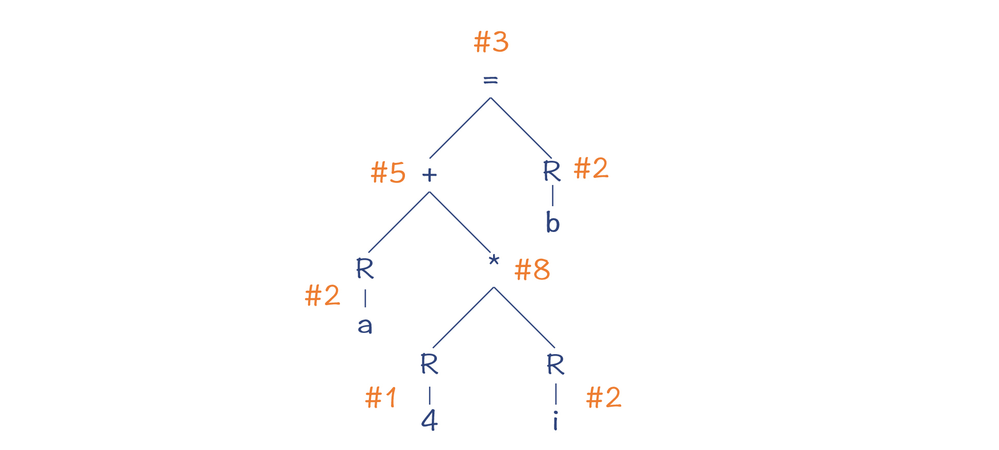
图3：用比较幼稚的算法做模式匹配
最后形成的汇编代码是这样的：
Load_Mem a, R1
Load_Const 4, R2
Load_Mem i, R3
Mul_Reg R2, R3
Add_Reg R3, R1
Load_Mem b, R2
Store R2, (R1)
这种方法，是自底向上的做树的重写。它的优点是特别简单，缺点是性能比较差。它一共生成了7条指令，代价是19（3+1+3+4+1+3+4）。
在上述步骤中，我们能看到很多可以优化的地方。比如，4*i这个子表达式，我们是用了3条指令来实现的，总的Cost是1+3+4=8，而如果改成两条指令，也就是使用Mul_mem指令，就不用先把i加载到寄存器，Cost可以是1+6=7。
Load_Const 4, R1
Mul_Mem i, R1
第二种方法，是类似Graal编译器所采用的方法，自顶向下的做模式匹配。比如，当我们处理赋值节点的时候，算法会尽量匹配更多的子节点。因为一条指令包含的子节点越多，那么通过一条指令完成的操作就越多，从而总的Cost就更低。
所以，算法的大致步骤是这样的：
- 第1步，在#3和#4两个模式中做选择的话，选中了#4号。
- 第2步，沿着AST继续所深度遍历，其中+号节点第1步被处理掉了，所以现在处理变量a，采用了模式#2，把变量加载到寄存器。
- 第3步，处理*节点。这个时候要在#7和#8之间做对比，最后选择了#7，因为它可以包含更多的节点。
- 第4步，处理常量4。因为上级节点在这里需要一个寄存器作为操作数，所以我们采用了模式#1，把常量加载到寄存器。
- 第5步，处理变量b。这里也要把它加载到寄存器，因此采用了模式#2。
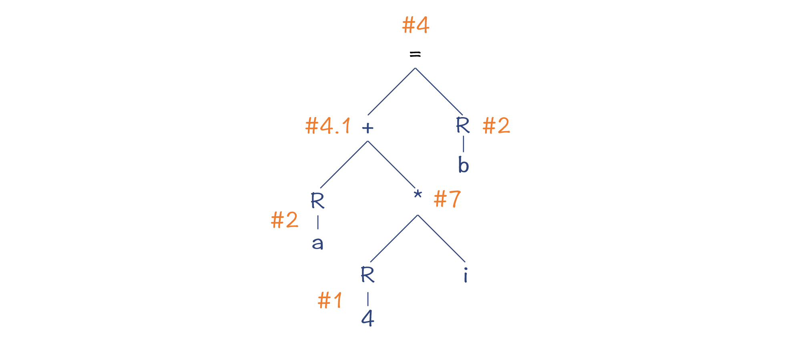
图4：Maximal Munch算法的匹配结果
到此为止，我们用了5条指令就做完了所有的运算，生成的汇编代码是：
Load_Mem a, R1
Load_Const 4, R2
Mul_Mem R2, i
Load_Mem b, R3
Store_Offset R3, (R1,R2)
这5条指令总的Cost是18（3+1+6+3+5）。
上述算法的特点，是在每一步都采用了贪婪策略，这种算法策略有时候也叫做“Maximal Munch”，意思就是每一步都去咬最大的一口。
贪婪策略会生成比幼稚的算法更优化的代码，但它不一定是最优的。你看下图中的匹配策略，它也是用了5条指令。
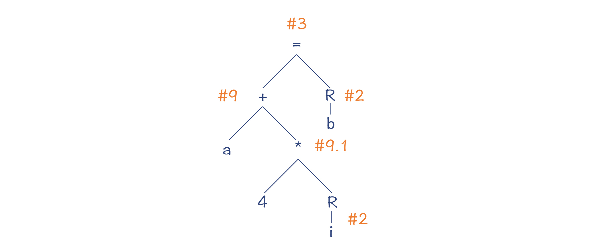
图5：最优的匹配策略
生成的汇编代码如下：
Lead_Mem a, R1
Load_Mem i, R2
Lea (R1,R2,4), R1
Load_Mem b, R2
Store R2, (R1)
这个新的匹配结果，总的Cost是17（3+3+4+3+4），比前一个算法的结果更优化了。那我们用什么算法能得到这样一个结果呢？
一个思路，是找出用模式匹配来覆盖AST的所有可能的模式，并找出其中Cost最低的。你可以采用暴力枚举的方法，在每一个节点，去匹配所有可能的模式，从而找出多组解。但显然，这种算法的计算量太大，所需的时间会根据AST的大小呈指数级上升，导致编译速度无法接受。
所以我们需要找到一个代价更低的算法，这就是BURS算法，也就是“自底向上重写系统，Bottom-Up Rewriting System”。在HotSpot的C2编译器中，就采用了BURS算法。这个算法采用了动态规划（Dynamic Programming）的数学方法来获取最优解，同时保持了较低的算法复杂度。
那么，要想理解BURS算法，你就必须要弄懂动态规划的原理。如果你之前没有学过这个数学方法，请不要紧张，因为动态规划的原理其实是相当简单的。
我在网上发现了一篇能够简洁地说清楚动态规划的文章。它举了一个例子，用最少张的纸币，来凑出某个金额。
比如说，假设你要凑出15元，怎么做呢？你还是可以继续采用贪婪算法。首先，拿出一张10元的纸币，也就是小于15的最大金额，然后再拿出5元来。这样你用两张纸币就凑出了15这个数值。这个时候，贪婪策略仍然是有效的。
但是，如果某个奇葩的国家发行的货币，不是按照中国货币的面额，而是发行1、5、11元三种面额的纸币。那么如果你仍然使用贪婪策略，一开始拿出一张11元的纸币，你就还需要再拿出4张1元的，这样就一共需要5张纸币。
但这显然不是最优解。最优解是只需要三张5元的纸币就可以了，这就像我们用贪婪算法去做指令生成，得到的可能不是最优解，是同样的道理。
那如何采用动态规划的方法来获取最优解呢？它的思路是这样的，假设我们用f(n)来代表凑出n元钱最少的纸币数，那么：
- 当一开始取11元的话，Cost = f(4) + 1；
- 当一开始取5元的话，Cost = f(10) + 1；
- 当一开始取1元的话，Cost = f(14) + 1。
所以，我们只需要知道f(4)、f(10)和f(14)哪个值最小就行了。也就是说，f(15)=min(f(4), f(10), f(14)) + 1。 而f(4)、f(10)和f(14)三个值，也可以用同样的方法递归地求出来，最后得到的值分别是4、2、4。所以f(15)=3，这就是最优解。
这个算法最棒的一点，是整个计算中会遇到的f(14)、f(13)、f(12)、f(11) … f(3)、f(2)这些值，一旦计算过一遍，就可以缓存下来，不必重复计算，从而让算法的复杂性降低。
所以，动态规划的特点，是通过子问题的最优解，得到总的问题的最优解。这种方法，也可以用于生成最优的指令组合。比如，对于示例程序来说，假设f(=)是以赋值运算符为根节点的AST所生成的指令的总的最低Cost，那么：
- 当采用#3的时候，Cost = 4 + f(+) + f(b)；
- 当采用#4的时候，Cost = 5 + f(a) + f(*) + f(b)。
所以你能看出，通过动态规划方法，也能像凑纸币一样，求出树覆盖的最优解。
BURS算法在具体执行的时候，需要进行三遍的扫描。
第一遍扫描是自底向上做遍历，也就是后序遍历，识别出每个节点可以进行的转换。我在图6中给你标了出来。以a节点为例，我们可以对它做两个操作，第一个操作是保持一个mem节点不动，第二个操作是按照模式#1把它转换成一个reg节点。
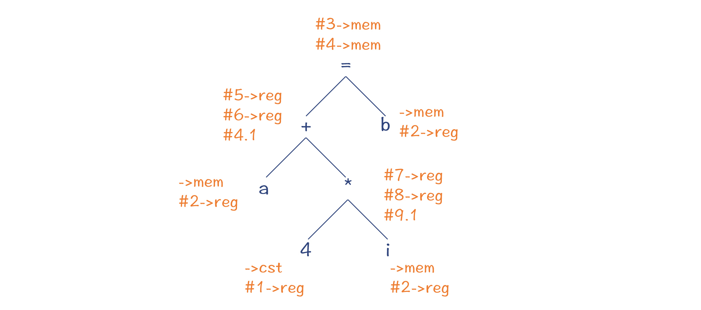
图6：识别AST的每个节点可以进行的转换
第二遍扫描是自顶向下的，运用动态规划的方法找出最优解。
第三遍扫描又是自底向上的，用于生成指令。
好了，那么到目前为止，你就已经了解了指令生成的算法思路了。这里我再补充几点说明：
- 示例中的指令和Cost值，是为了便于你理解算法而设计的。在这个示例中，最优解和最差解的Cost只差了2，也就是大约12%的性能提升。而在实际应用中，优化力度往往会远远大于这个值。
- 在第6讲探究IR的数据结构时，我提到过有向无环图（DAG），它比起刚才例子中用到的树结构，能够消除一些冗余的子树，从而减少生成的代码量。LLVM里在做指令选择的时候，就是采用了DAG，但算法思路是一样的。
- 示例中到的两个算法，贪婪算法和BURS算法，它们花费的时间都与节点数呈线性关系，所以性能都是很高的。其中BURS算法的线性系数更大一点，做指令选择所需的时间也更长一点。
OK，那么接下来，我们来探究第二个算法，寄存器分配算法。
寄存器分配算法
在解析Graal编译器和Go的编译器的时候，我都提到过它们的寄存器分配算法是线性扫描算法。我也提到过，线性扫描算法的性能比较高。
那么，线性扫描算法的原理是什么呢？总的来说，线性扫描算法理解起来其实相当简单。我用一个例子来带你了解下。
假设我们的程序里有从a到g共7个变量。通过数据流分析中的变量活跃性分析，你其实可以知道每个变量的生存期。现在，我们已知有4个物理寄存器可用，那么我们来看一下要怎么分配这几个物理寄存器。
在第1个时间段，a、b、c和d是活跃的，那我们刚好把4个物理寄存器分配给这四个变量就行了。
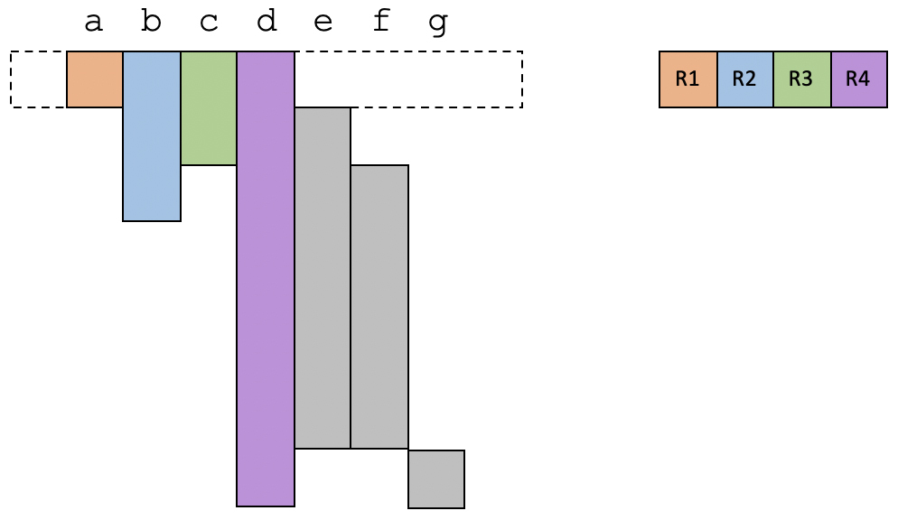
在第2个时间段，a的生存期结束，而一个新的变量e变得活跃，那么我们就把a原来占用的寄存器刚好给到e就可以了。
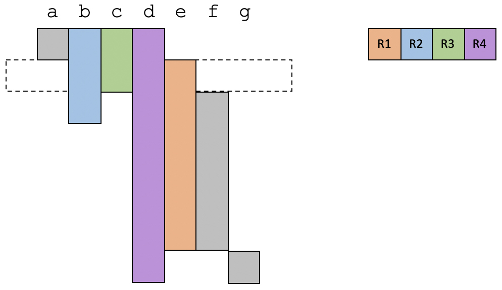
在第3个时间段，我们把c占用的寄存器给到f，目前仍然是使用4个寄存器。
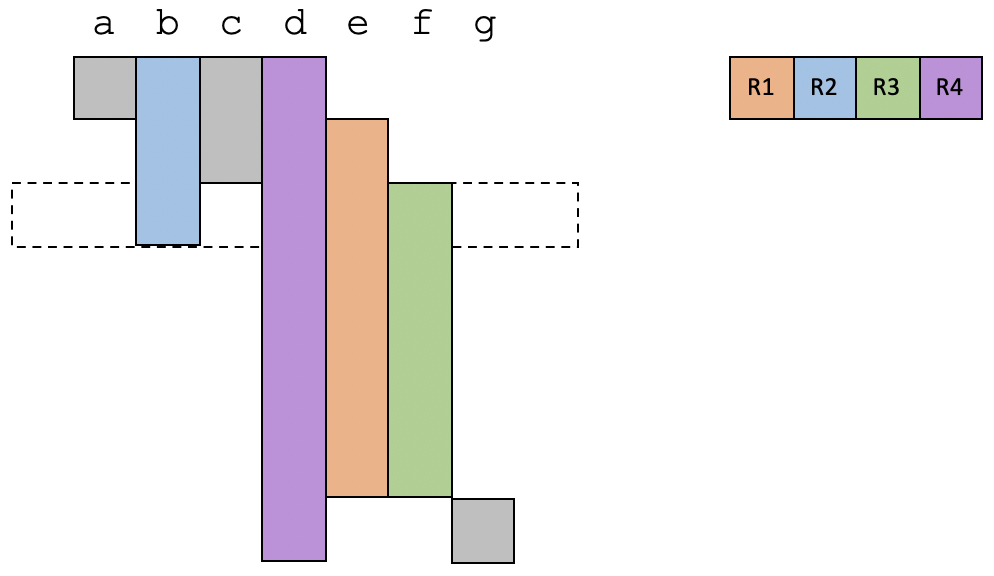
在第4个时间段，b的生存期结束。这时候只需要用到3个寄存器。
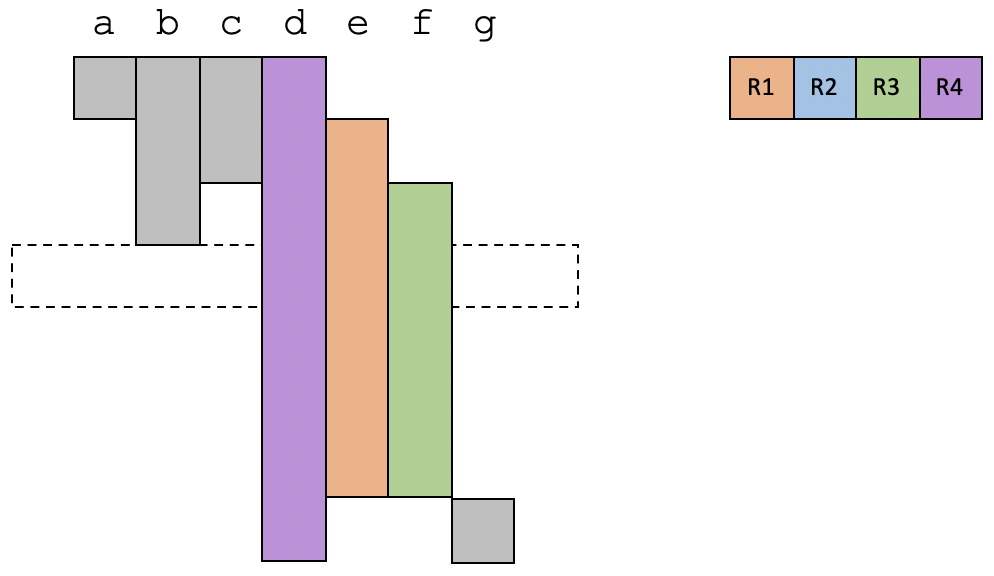
在最后一个时间段，只有变量d和g是活跃的，占用两个寄存器。
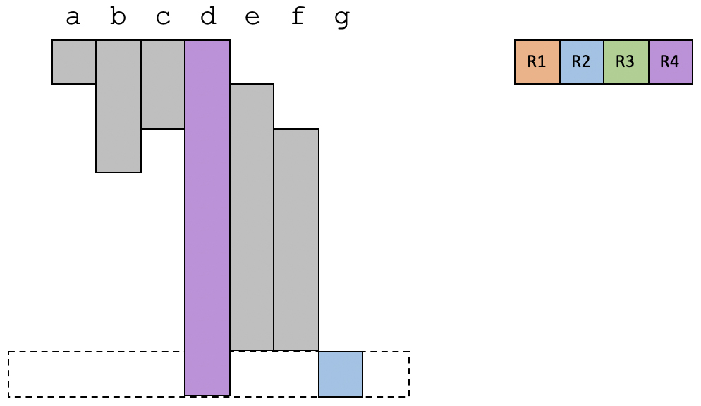
可以看到，在上面这个例子中，所有的变量都可以分配到物理寄存器。而且你也会发现，这个例子中存在多个变量因为生存期是错开的，因此也可以共享同一个寄存器。
但是，如果没有足够的物理寄存器的话，我们要怎么办呢？那就需要把某个变量溢出到内存里了。也就是说，当用到这个变量的时候，才把这个变量加载到寄存器，或者有一些指令可以直接用内存地址作为操作数。
给你举另一个例子，我们来看看物理寄存器不足的情况会是什么样子。在这个例子中，我们有三个物理寄存器。
在第1个时间段，物理寄存器是够用的。
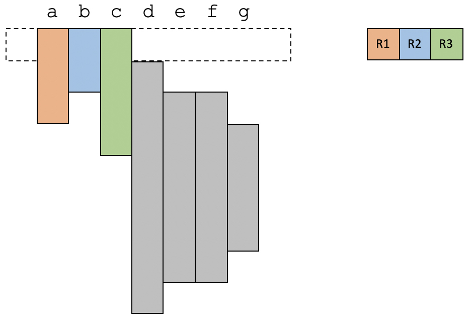
在第2个时间段，变量d变得活跃，现在有4个活跃变量，所以必须选择一个溢出到内存。我们选择了a。
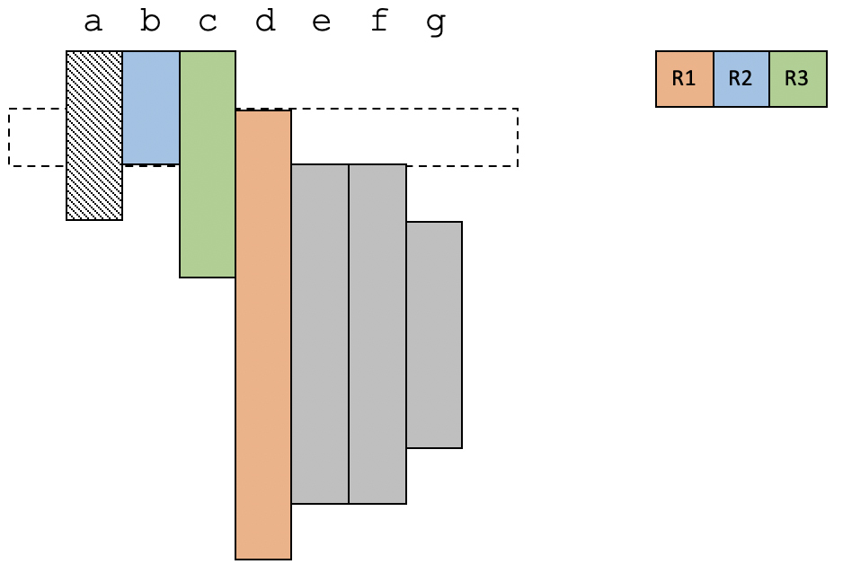
在第3个时间段，e和f变得活跃，现在又需要溢出一个变量才可以。这次选择了c。
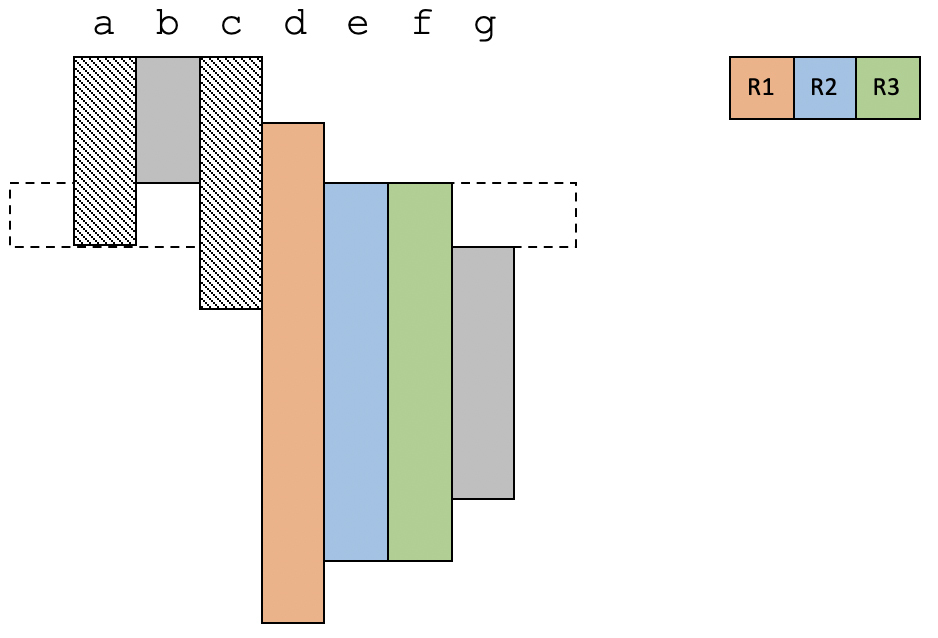
在第4个时间段，g也变得活跃，这次把d溢出了。
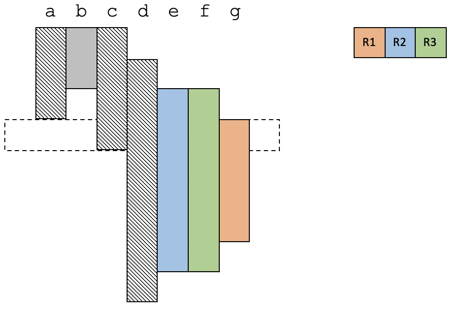
以上就是线性扫描算法的思路：线性扫描整个代码，并给活跃变量分配寄存器。如果物理寄存器不足，那么就选择一个变量，溢出到内存中。你看，是不是很简单？
在掌握了线性扫描算法的思路以后，我再给你补充一点信息：
- 第一，线性扫描算法并不能获得寄存器分配的最优解。所谓最优解，是要让尽量多的操作在寄存器上实现，尽量少地访问内存。因为线性扫描算法并没有去确定一个最优值的目标，所以也就谈不上最优解。
- 第二，线性扫描算法可以采用一些策略，让一些使用频率低的变量被溢出，而像高频使用的循环中的变量，就保留在寄存器里。
- 第三，还有一些其他提升策略。比如，当存在多余的物理寄存器以后，还可以把之前已经溢出的变量重新复活到寄存器里。
好了，上述就是线性扫描的寄存器分配算法。另外我们再来复习一下，在第8讲中，我还提到了另一个算法，是图染色算法，这个算法的优化效果更好，但是计算量比较大，会影响编译速度。
接下来，让我们再回到计算机语言设计的主线上，一起讨论一下编译器的后端与语言设计的关系。
编译器后端与语言的设计
编译器后端的目的，是要能够针对不同架构的硬件来生成目标代码，并尽量发挥硬件的能力。那么为了更好地支持语言的设计，在编译器后端的设计上，我们需要考虑到三个方面的因素。
- 平衡编译速度和优化效果
通常，我们都希望编译后的代码越优化越好。但是，在有些场景下，编译速度也很重要。比如像JVM这样需要即时编译的运行时环境，编译速度就比较重要。这可能就是Graal的指令选择算法和编译器分配算法都比较简单的原因吧。
Go语言一开始也把编译速度作为一个重要的设计考虑，所以它的后端算法也比较简单。我估计是因为Go语言的发起者（Robert Griesemer、Rob Pike和Ken Tompson）都具有C和C++的背景，甚至Ken Tompson还是C语言的联合发明人，他们都深受编译速度慢之苦。类似浏览器、操作系统这样比较大的软件，即使是用很多台机器做编译，还是需要编译很久。这可能也是他们为什么想让Go的编译速度很快的原因。
而Julia的设计目标是用于科学计算的，所以其使用场景主要就是计算密集型的。Julia采用了LLVM做后端，做了比较高强度的优化，即使会因此导致运行时由于JIT而引起短暂停顿。
- 确定所支持的硬件平台
确定了一门语言主要运行在什么平台上，那么首先就要支持该平台上的机器码。由于Go语言主要是用于写服务端程序的，而服务端采用的架构是有限的，所以Go语言支持的架构也是有限的。
硬件平台也影响算法的选择，比如现在很多CPU都支持指令的乱序执行，那你在实现编译器的时候就可以省略指令重排序（指令调度）功能。
- 设计后端DSL
虽然编译器后端要支持多种硬件，但我们其实会希望算法是通用的。所以，各个编译器通常会提供一种DSL，去描述硬件的特征，从而自动生成针对这种硬件的代码。
在Graal中，我们看到了与指令选择有关的注解，在Go的编译器中，我们也看到了对IR进行转换的DSL，而LLVM则提供了类似的机制。
课程小结
今天这一讲，我把后端的两个重要的算法拿出来给你单独介绍了一下，并一起讨论了后端技术策略与计算机语言的关系。你需要记住这几个知识点：
- 关于指令选择：从IR生成机器码（或LIR），通常是AST或DAG中的多个节点对应一条指令，所以你要找到一个最佳的组合，把整个AST或DAG覆盖住，并且要找到一个较优的或最优的解。其中，你还要熟悉贪婪算法和动态规划这两种不同的算法策略，这两种算法不仅仅会用于指令选择，还会用于多种场景。理解了这两种算法之后，就会给你的工具库添加两个重要的工具。
- 关于寄存器分配：线性扫描算法比较简单。不过在一些技术点上我们去深入挖掘一下，其实会发现还挺有意思的。比如，当采用SSA格式的IR的时候，寄存器分配算法会有什么不同，等等。你可以参考看看文末我给出的资料。
- 关于编译器后端的设计：我们要考虑编译速度和优化程度的平衡，要考虑都能支持哪些硬件。因为要支持多种硬件，通常要涉及后端的DSL，以便让算法尽量中立于具体的硬件架构。
我把本讲的知识点也整理成了思维导图，供你复习和参考：
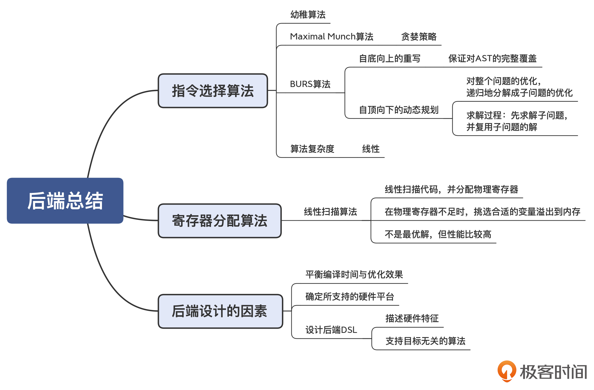
一课一思
动态规划算法是这节课的一个重要知识点。在学过了这个知识点以后，你能否发现它还可以被用于解决哪些问题？欢迎分享你的经验和看法。
参考资料
- 对动态规划方法的理解，我建议你读一下这篇文章，通俗易懂。
- 在《编译原理之美》的第29讲，有对寄存器分配算法中的图染色算法的介绍，你可以去参考一下。
- 这两篇关于线性扫描算法的经典论文，你可以去看一下：论文1，论文2。
- 这篇文章介绍了针对SSA格式的IR的线性扫描算法，值得一看。
© 2019 - 2023 Liangliang Lee. Powered by gin and hexo-theme-book.